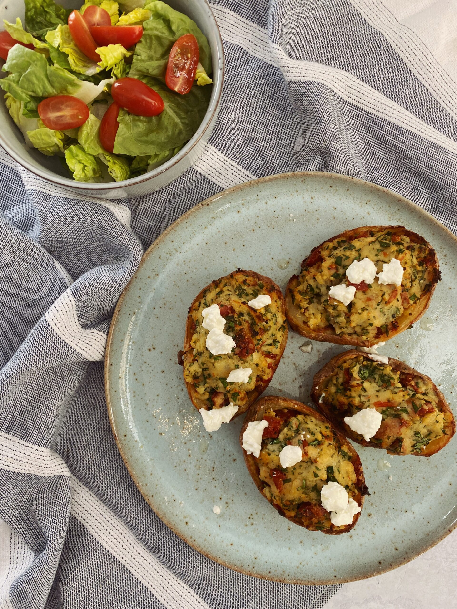

Home
Potato Skins

Description
A very easy recipe for lasagna
Ingredients
- Baking potatoes
- Olive oil
- Goats cheese
- Parsley
- Coriander
- Sundried tomatoes, drained of oil
Steps
- Preheat the oven to 200oc.
- Prick the potatoes all over with a fork and then place in the microwave for 15 minutes until soft.
- Remove from the microwave, slice them in half and carefully, using a tea towel to hold the potatoes, spoon out the potato filling into a large mixing bowl being careful not to damage the potato skin.
- Place the potato skins on a baking tray and drizzle with a little olive oil and sea salt. Place in the oven to crisp up for 12 minutes.
- To the bowl of potato, crumble the goats cheese in and add the chopped parsley and coriander and chopped sundried tomatoes. Add a good glug of the sundried tomato oil, season well and mix.
- Remove the potato skins from the oven and leave to cool.
- Spoon in the potato mix into each of the skins and leave to cool.